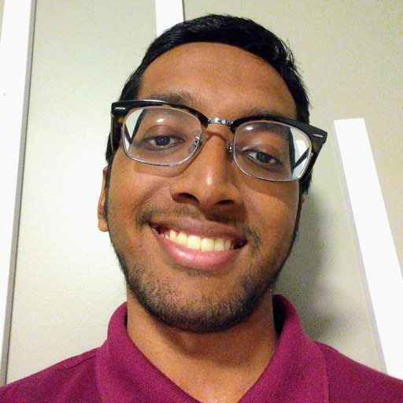
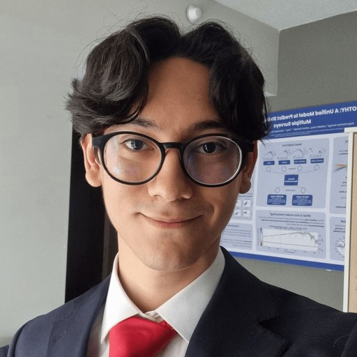
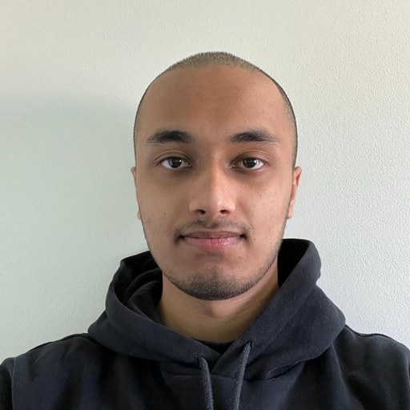

Nawaf Alrefaie
Mapping dark matter with AI

Zain Azam
CMOS detector characterization for DMD-MOS

Yazan Bakhshwin
Metallicities of RR Lyrae with LSST

Laly Boyer
DMD-MOS instrumentation

Aishani Chaudhuri
Hunting for binary stars in DESI spectroscopy

Frank Ziang Chen
DMD-based multi-object spectrograph

Liwen Chen
Improving stellar astrometry with JWST & Gaia

Rosayla Coulthard
CEMP stars & ML abundance validation

Winnie (Mingzhi) Jiang
RR Lyrae in the Orphan-Chenab stellar stream
DJ
Damon Johnston
Constraining the local universe with Gaia & Hubble stellar motions

Isabelle Laing
Galactic paleontology; the DOROTHY catalogue

Andrew Li
Finding stellar streams in S5 with Bayesian mixture models
→ MSc, U. Victoria

Wesley Luo
Mapping the stellar halo with BHB stars in DELVE

Connor MacKeigan
Stream characterization with machine learning

Diego Martínez Noriega
University of Waterloo
The DOROTHY stellar catalogue with machine learning

Emily Moran
Stellar stream modelling

Matteo Moretti
The formation history of Andromeda

Alexandros Pratsos
Milky Way substructure with geometric deep learning

Olivia Shen
Dwarf galaxies and self-interacting dark matter

Daksh Singh
Automated optical fiber characterization for future spectroscopic surveys

Matteo Statti
A small-scale SCIDAR for campus telescopes

Pedro Werneck
Stellar proper motions with GaiaHub & BP3M

Maia Wertheim
Searching for streams in the distant Milky Way halo
→ U of T PhD

Andy Yu
Mapping dark matter with AI